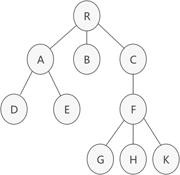
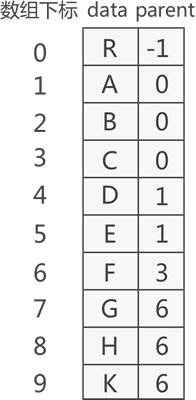
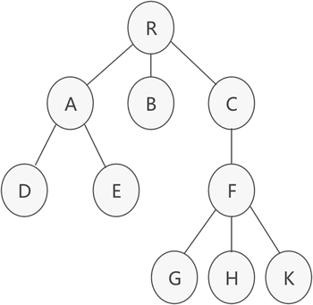
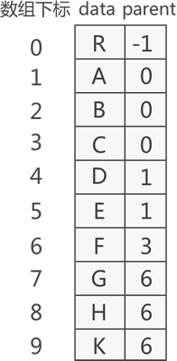

树的双亲表示法（包含C语言实现代码）
前面讲了二叉树的顺序存储和链式存储，本节来学习如何存储具有普通树结构的数据。

图 1 普通树存储结构
如图 1 所示，这是一棵普通的树，该如何存储呢？通常，存储具有普通树结构数据的方法有 3 种：
本节先来学习双亲表示法。
双亲表示法采用顺序表（也就是数组）存储普通树，其实现的核心思想是：顺序存储各个节点的同时，给各节点附加一个记录其父节点位置的变量。

图 2 双亲表示法存储普通树示意图
图 2 存储普通树的过程转化为 C 语言代码为：
因此，存储图 1 中普通树的 C 语言实现代码为：

图 1 普通树存储结构
如图 1 所示，这是一棵普通的树，该如何存储呢？通常，存储具有普通树结构数据的方法有 3 种：
- 双亲表示法；
- 孩子表示法；
- 孩子兄弟表示法；
本节先来学习双亲表示法。
双亲表示法采用顺序表（也就是数组）存储普通树，其实现的核心思想是：顺序存储各个节点的同时，给各节点附加一个记录其父节点位置的变量。
注意，根节点没有父节点（父节点又称为双亲节点），因此根节点记录父节点位置的变量通常置为 -1。
例如，采用双亲表示法存储图 1 中普通树，其存储状态如图 2 所示：
图 2 双亲表示法存储普通树示意图
图 2 存储普通树的过程转化为 C 语言代码为：
#define MAX_SIZE 100//宏定义树中结点的最大数量
typedef char ElemType;//宏定义树结构中数据类型
typedef struct Snode{
TElemType data;//树中结点的数据类型
int parent;//结点的父结点在数组中的位置下标
}PTNode;
typedef struct {
PTNode tnode[MAX_SIZE];//存放树中所有结点
int n;//根的位置下标和结点数
}PTree;
因此，存储图 1 中普通树的 C 语言实现代码为：
#include<stdio.h>
#include<stdlib.h>
#define MAX_SIZE 20
typedef char ElemType;//宏定义树结构中数据类型
typedef struct Snode //结点结构
{
ElemType data;
int parent;
}PNode;
typedef struct //树结构
{
PNode tnode[MAX_SIZE];
int n; //结点个数
}PTree;
PTree InitPNode(PTree tree)
{
int i, j;
char ch;
printf("请输出节点个数:\n");
scanf("%d", &(tree.n));
printf("请输入结点的值其双亲位于数组中的位置下标:\n");
for (i = 0; i < tree.n; i++)
{
getchar();
scanf("%c %d", &ch, &j);
tree.tnode[i].data = ch;
tree.tnode[i].parent = j;
}
return tree;
}
void FindParent(PTree tree)
{
char a;
int isfind = 0;
printf("请输入要查询的结点值:\n");
getchar();
scanf("%c", &a);
for (int i = 0; i < tree.n; i++) {
if (tree.tnode[i].data == a) {
isfind = 1;
int ad = tree.tnode[i].parent;
printf("%c的父节点为 %c,存储位置下标为 %d", a, tree.tnode[ad].data, ad);
break;
}
}
if (isfind == 0) {
printf("树中无此节点");
}
}
int main()
{
PTree tree;
for (int i = 0; i < MAX_SIZE; i++) {
tree.tnode[i].data = " ";
tree.tnode[i].parent = 0;
}
tree = InitPNode(tree);
FindParent(tree);
return 0;
}
程序运行示例：
请输出节点个数:
10
请输入结点的值其双亲位于数组中的位置下标:
R -1
A 0
B 0
C 0
D 1
E 1
F 3
G 6
H 6
K 6
请输入要查询的结点值:
C
C的父节点为 R,存储位置下标为 0
关注公众号「站长严长生」，在手机上阅读所有教程，随时随地都能学习。内含一款搜索神器，免费下载全网书籍和视频。

微信扫码关注公众号